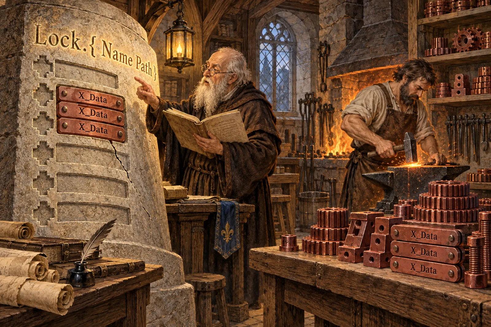
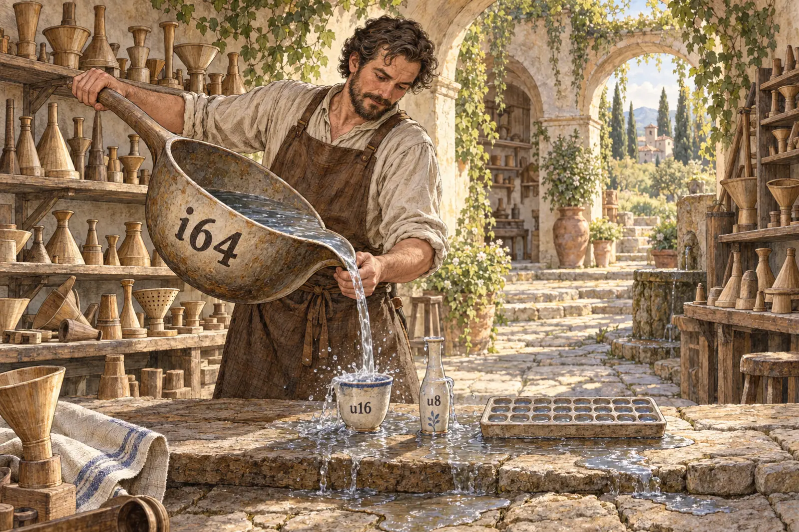
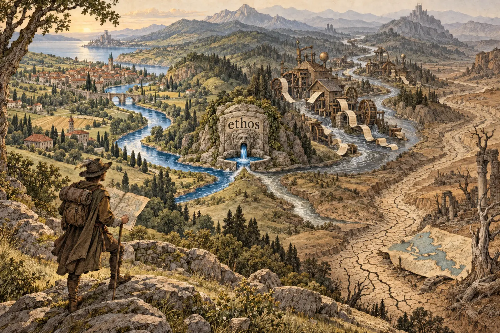

How Good Is Ethos
The short answer
This flow's subflow audited Ethos on 2026-09-25. It checked the living's asks against the tool, read ethos-zero 10.0.0, ran scratch .ethos files through its binary (the "probes"), and surveyed the real .ethos files: 76 across 63 repos, on a recount (the audit first counted 56 across about 50).
- Strong: the data core. Ethos turns Library, Signal and Sema files into Rust, gives every type its datom derives, keeps datom behind a feature in Signal, and tests that the generated files stay fresh.
- Missing: the newest ask, whole programs written in Ethos. There is no function-body syntax, no implementations, no manifest.
- Split: real use has three pipelines, and about a fifth of the files have no check that would notice drift from their Rust.
- One real bug: the generator can emit the same type three times and still say
Generated. - Narrow: the only number is
i64. Real code works around this all the time.
What you asked for
But within a few months I would like to develop Ethos to the point where we can just write the whole program directly in Ethos. That would mean fleshing out the function syntax in Ethos, implementations, and maybe the little things that need to be put together. Maybe the manifest needs to be fleshed out better for compiling and finding dependencies and so on.
-- living, input mode not established, 2026-09-25, to Psyche Medium e51411 (flows/e51411/vision/ethos.md).
They work in series by sending each other signals to create this layer of code from ethos and datom all the way into compiled Rust.
-- psyche, typed, 2026-09-24, to Psyche High 752e0f, of nomos (the macro layer) and logos (flows/752e0f/vision/ethosNextGeneration.md).
Status: absent. A kind gives a trait's signatures and nothing more. There is no body syntax and no manifest. Imports are Rust paths that nobody checks, and one .ethos file cannot import another: other_crate:[ Thing ] emits other_crate::Thing blindly. Nomos and logos exist only as reference repos declared frozen (core-logos still took a commit on 09-10).

What is built well
- Kinds, not generics. A kind's identity is its name plus its constraints, and it compiles (
fixtures/processable-kinds.ethos). - Every type bears the datom kinds; aliases carry no derive.
- Signal without datom: the Nexus side builds with no datom-codec (
tests/signal_without_datom.rs). - Freshness is rigorous: a test regenerates both self-files and all 17 fixtures and compares.
- Refusals are typed: duplicates, undeclared names and cycles are refused.
A.B B.AgivesCycle.A. Rust keywords are escaped (r#type). - Guards:
nix flake checkrefuses free functions and inherent methods.
23 signal-* and 16 meta-signal-* repos are generated by it and held fresh.
The probes that broke
These are the audit's probes, relayed from its report (not rerun here).
Three types with one name. Inline types get a _Data suffix "so it never collides". This file:
P.[ X.{ String } ] Q.[ X.{ Integer } ] X_Data.Stringproduces three X_Data items. That is invalid Rust, and the reply is still Generated.
A variant that changes meaning at a distance. Sel.[ Locks ] is a unit variant. Declare a type Locks anywhere, and it silently becomes Locks(Locks).
A name that shadows an intrinsic. Declare Result, then write Result<String Integer>. The error is Arity.{ 0 2 }, which does not say what went wrong.
The root the skills use. This is the most-written ethos in the estate (operational-final-response):
Type
FinalResponse.{ FlowId Kind Markdown Vector<Topic> Vector<Subflow> Vector<Question> }
[ FlowId.String Kind.[ MainFlow Subflow ] Markdown.String Topic.String Subflow.{ Topic Markdown } Question.Markdown ]ethos-zero refuses it: Conceptual.{ [] Root }.
Also: only 9 of the 17 fixtures are compiled, Option and Result are emitted unqualified, and a conceptual error gives a protos path like [ 1 1 1 1 0 ] with no line or column.

The shape of the language
Meaning comes from position. Whether [ … ] is an enum, a vector or a section depends only on where it sits. . means three things: a declaration head, "this variant carries", and the self-receiver in a kind (summarize.[ String ]).
The Library form is mostly empty. Of 30 real Library and Interface files, 18 leave 3 of their 4 sections as []. associations is empty in every Library file. By the vision's own rule, that is repetition:
Any repetition in ethos syntax is an implementation failure. Ethos aims to be the most terse, non-repetitive syntax ever made.
-- Vision/ethos.md (the psyche's articulation, from 2026-08-01; not a verbatim quote).
The skills already moved to a shorter Type root, a head type and one bracket of definitions. The tool refuses it (page 4).
Five root vocabularies now exist: Library/Signal/Sema, Interface with versions, Interface.{0 2 0} with a Channel line, Nexus.1/Sema.1, and Type. The editor grammar, tree-sitter-ethos, still describes an older language.

What real files cannot say
Ranked by how often it bites in the 76 files:
- Sized and unsigned integers. The only integer is
i64. lojix has 196 source lines that use an integer width. chroma hasKelvinTemperature(u16). signal-version-handover hasDate{year:u16,…}while its ethos saysInteger. - Bytes and fixed arrays.
NameDigest([u8;32]), and aSignal<T>{bytes:Vec<u8>}copied by hand into 3 meta-signal repos. - Value rules. lojix keeps 13 "Validated" shadow types only to add checks. Malli writes
[:int {:min 0}]; ASN.1 writesINTEGER (0..255). - Docs.
;comments are dropped, so doc comments go on by hand. - Recursion under rkyv. signal-aggregator: "
Vec<Self>andBox<Self>both overflow". Ethos also over-boxes, and acceptsS.{ Self }, a struct with no finite value. - Time, maps, ordering, generic data wrappers, defaults. All hand-written today.
A name that is not a type
A field is named after its type, so authors declare LockName.String, FlowId.String, LockPath.String. These become Rust pub type aliases. They give the field its name and no type safety: LockName and FlowId are interchangeable. So authors wrap by hand anyway: 9 hand-written X(String) newtypes in lojix and meta-signal-ethos-zero alone, and dozens across the estate.
A new type generally is like
-- psyche, typed, 2026-09-08 (flows/8e9e77/vision/single-field-structs.md).name.string,age.integer, or whatever we use:int.
Meanwhile single-field structs you asked to refuse are still accepted: Measurement.{ Decimal }, Result.{ String }.
The choice: either an alias is only a name and the docs say so, or Name.String emits a transparent newtype. Your 09-08 words point at the second. inferenceneeds your ruling.

Three pipelines, and where the ethos binds
- ethos-zero, a build dependency of 46 repos. Clean.
- core-ethos bootstrap, with the
Interfaceroot, 7 repos. It produces names likepub struct z2VaBD(u64)andfield_0, and mapsIntegertou64. .schemafiles through schema-rust (17 repos, spirit and Persona among them). spirit's.ethosfiles next to its.schemaare orphaned.
Where the binding is used, the ethos is the truth. signal-flow's build.rs regenerates its Rust from the ethos and asserts it equals the committed file, so the two agree:
Restarted.{ FlowId SessionId Generation }(Corrected: an earlier version of this page said the flow's contract had drifted. That was read from a stale checkout; the live repos agree.)
What the binding cannot catch is an import of a name that does not exist: meta-signal-flow imported a RecipientDisposition that signal-flow never defined.
An ethos is only the truth where a freshness check binds it, and about 20% of real files (15 of 76) have none. protos and datom-codec commit generated contracts that a Nix check keeps fresh but their code never imports. Four repos pinned to an older ethos-zero still commit Rust deriving Compositional, which current datom-codec no longer exports.
Proposals
Each is sized for one Opus subagent. your ruling marks the ones that need you.
- 1
- 2
- 3
- 4
- 5
- 6
- 7
- 8
- 9
- 10